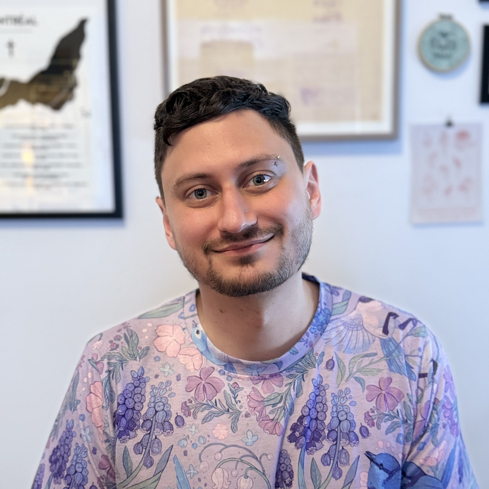

About

Logan S. James is a postdoctoral fellow at McGill University who uses comparative approaches to understand mechanisms that shape acoustic communication systems.
His research spans a diverse array of species and methods. Current and recent projects include: examining biases in vocal patterns across songbirds, hummingbirds, and human music; experimentally modulating neural mechanisms underlying vocal production in wild túngara frogs; measuring auditory cognition development in frog-eating bats; identifying shared acoustic preferences across humans and other species; and using AI technologies to create real-time acoustic interactions with zebra finches.
Logan is also an affiliated researcher with the Earth Species Project, board member for Wavelength Animal Communication Science, and a visiting scholar at UT Austin & Yale University. Formerly a fellow at the Smithsonian Tropical Research Institute.